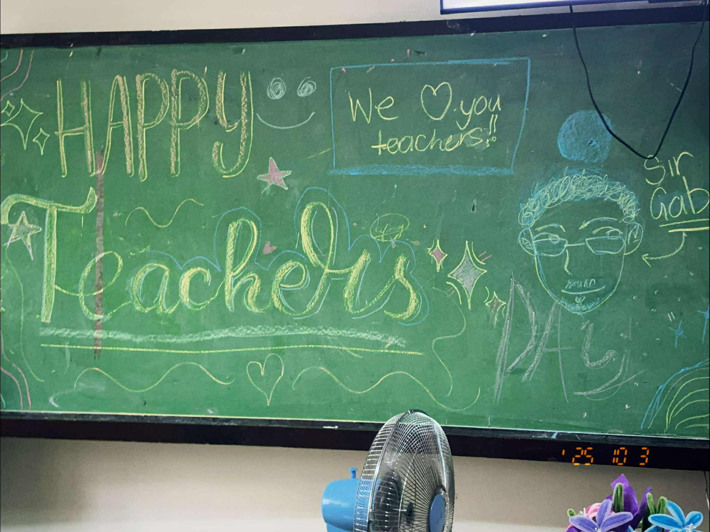

AP
What is the most important thing I learned from the event?
I learned that we must not only value our own traditions but also those of other countries because this is where we will truly find the connection within human diversity. By appreciating different cultures, we open our minds to new perspectives and build bridges that unite us beyond borders. Through this, we can find solutions to the problems we face in society.
How can I apply what I learned in real-life situations?
I can apply this by showing respect and care for other cultures and traditions because we are all brothers and sisters, and we must truly connect with others so that one day we can achieve peace.
Did I actively participate in the event? How?
Yes, I actively supported our section’s representatives and helped with the preparation for MANA Mo.
If I were to teach this topic/subject to a classmate, how would I explain it?
I would show them pictures of the problems we face in our society, then help them understand how these issues affect our community, and ask them to come up with possible solutions.
Why is it important to have an event for each subject?
It helps people respect other traditions and recognize the problems we face in society. By coming together, we can work to solve these issues.
SCIENCE
What is the most important thing I learned from the event?
I learned that science is not just about memorizing formulas, dates, or the names of scientists, but about understanding the world around us and finding solutions to the problems we face in society.
How can I apply what I learned in real-life situations?
I can apply this by focusing not just on memorizing formulas, dates, or the names of scientists, but by understanding the concepts and trying to apply them to real-world scenarios.
Did I actively participate in the event? How?
Yes, I actively supported our section’s representatives and volunteered as a technical assistant for the presentation during the research defense.
If I were to teach this topic/subject to a classmate, how would I explain it?
Instead of simply giving them something to memorize, I would present a real-world problem that we face in society and ask them to create a research proposal project based on it.
Why is it important to have an event for each subject?
It is important because instead of simply memorizing information from textbooks, we should focus on truly understanding it. This deeper understanding allows us to face real-world challenges and find effective solutions. For example, in the subject of Research, we are taught to investigate issues and develop ways to address problems in society. Through this approach, we can contribute to building a safer and more peaceful world.
TEACHERS’ DAY
What is the most important thing I learned from the event?
Teachers dedicate themselves to helping students grow, not only academically but also as individuals. This made me appreciate their hard work and the significant impact they have on our lives.
How can I apply what I learned in real-life situations?
I will show respect and gratitude to my teachers and help them without expecting anything in return. I will also try to be patient and supportive when helping my classmates.
Did I actively participate in the event? How?
Yes, I actively participated by helping organize the classroom and serving as a marshal for Teachers’ Day after the mass.
If I were to teach this topic/subject to a classmate, how would I explain it?
I would explain that Teachers’ Day is a special occasion where we recognize and thank our teachers for their guidance and dedication in teaching us.
Why is it important to have an event for each subject?
It highlights how teachers dedicate themselves to teaching us regardless of who we are. It also encourages interest in learning and fosters respect for the teachers we have.
BUWAN NG WIKA

What is the most important thing I learned from the event?
I learned the importance of preserving and appreciating our Filipino heritage and culture, because it is a key part of our identity.
How can I apply what I learned in real-life situations?
I can use and promote the Filipino language in my daily conversations, encourage others to appreciate our traditions, and participate in cultural activities.
Did I actively participate in the event? How?
Yes, I increased my use of our native language, Tagalog, and wore a Barong Tagalog every Monday.
If I were to teach this topic/subject to a classmate, how would I explain it?
I would explain Buwan ng Wika as a story about how Filipinos fought for their independence from the Spanish because without them, we Filipinos would not even exist.
Why is it important to have an event for each subject?
It helps students connect what they learn about our culture to their daily lives, providing a deeper appreciation of our national identity and encouraging them to practice cultural values in everyday situations.
CLUSTER MEET
What is the most important thing I learned from the event?
I learned how hard efforts, sacrifices, and dedication can lead to success.
How can I apply what I learned in real-life situations?
I can learn how dedication can lead to success by continuously improving myself and striving for excellence.
Did I actively participate in the event? How?
Yes, I actively supported our school representatives and cheered for them.
If I were to teach this topic/subject to a classmate, how would I explain it?
I would say that the cluster meet is a competition where students’ dedication, hard work, and sacrifices lead to memorable achievements.
Why is it important to have an event for each subject?
It motivates students to work hard, showcase their talents, and build cooperation and teamwork with one another.
INTRAMS

What is the most important thing I learned from the event?
I learned the importance of sportsmanship, discipline, and giving your best effort even in the face of defeat.
How can I apply what I learned in real-life situations?
I can maintain a healthy lifestyle by engaging in regular physical activities while also improving my cooperation and teamwork skills.
Did I actively participate in the event? How?
Yes, I actively supported my team and participated in the chess intramurals.
If I were to teach this topic/subject to a classmate, how would I explain it?
I would let them experience a few activities that require teamwork and encourage them to do their best so they can learn the true essence of intramurals.
Why is it important to have an event for each subject?
It promotes the idea that dedication and teamwork are important in everyday life and encourages students to balance extracurricular activities with their academics.